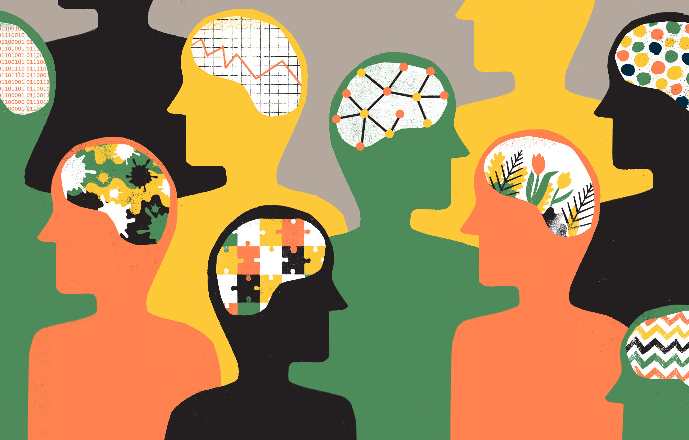

Trastornos Mentales
Descripción General
Un trastorno mental se caracteriza por una alteración clínicamente significativa de la cognición, la regulación de las emociones o el comportamiento de un individuo. Por lo general, va asociado a angustia o a discapacidad funcional en otras áreas importantes. Hay muchos tipos diferentes de trastornos mentales.

Trastornos Comunes
Dentro de los trastornos mentales más comunes en la población están:
Trastornos de ansiedad
- Ataques de pánico
- Fobias
- Trastorno por estrés postraumático (TEPT)
- Trastorno Obsesivo Compulsivo (TOC)
- Trastorno de Ansiedad Generalizada
En 2019, 301 millones de personas sufrían un trastorno de ansiedad, entre ellos 58 millones de niños y adolescentes (1). Los trastornos de ansiedad se caracterizan por un miedo y una preocupación excesivos y por trastornos del comportamiento conexos. Los síntomas son lo suficientemente graves como para provocar una angustia o una discapacidad funcional importantes. Existen varios tipos diferentes: trastorno de ansiedad generalizada (caracterizado por una preocupación excesiva), trastorno de pánico (que se caracteriza por ataques de pánico), trastorno de ansiedad social (con miedo y preocupación excesivos en situaciones sociales), trastorno de ansiedad de separación (que es el miedo excesivo o la ansiedad ante la separación de aquellos individuos con quienes la persona tiene un vínculo emocional profundo), etc. Existe un tratamiento psicológico eficaz, y dependiendo de la edad y la gravedad, también se puede considerar la medicación.
Depresión
En 2019, 280 millones de personas padecían depresión, entre ellos 23 millones de niños y adolescentes (1). La depresión es distinta de las alteraciones habituales del estado de ánimo y de las respuestas emocionales breves a los problemas de la vida cotidiana. En un episodio depresivo, la persona experimenta un estado de ánimo deprimido (tristeza, irritabilidad, sensación de vacío) o una pérdida del disfrute o del interés en actividades, la mayor parte del día, casi todos los días, durante al menos dos semanas. Concurren varios otros síntomas, como dificultad de concentración, sentimiento de culpa excesiva o de autoestima baja, falta de esperanza en el futuro, pensamientos de muerte o de suicidio, alteraciones del sueño, cambios en el apetito o en el peso y sensación de cansancio acusado o de falta de energía. Las personas que padecen depresión tienen un mayor riesgo de cometer suicidio. Sin embargo, existe un tratamiento psicológico eficaz, y dependiendo de la edad y la gravedad, también se puede considerar la medicación.
Esquizofrenia
A escala mundial, la esquizofrenia afecta a unos 24 millones de personas, es decir, a una de cada 300 personas (1). Quienes padecen esquizofrenia tienen una esperanza de vida de 10 a 20 años por debajo de la de la población general (4). La esquizofrenia se caracteriza por una importante deficiencia en la percepción y por cambios de comportamiento. Los síntomas pueden incluir persistencia de ideas delirantes, alucinaciones, pensamiento desorganizado, comportamiento muy desorganizado o agitación extrema. Las personas que padecen esquizofrenia pueden ver entorpecidas de forma persistente sus capacidades cognitivas. Sin embargo, existen diversas opciones terapéuticas eficaces, entre las que se cuentan la medicación, la psicoeducación, las intervenciones familiares y la rehabilitación psicosocial.
Trastornos del comportamiento alimentarios
En 2019, 14 millones de personas padecían trastornos alimentarios, de los que casi 3 millones eran niños y adolescentes (1). Los trastornos alimentarios, como la anorexia nerviosa y la bulimia nerviosa, se caracterizan por alteraciones en la alimentación y preocupación por los alimentos, así como por problemas notables de peso corporal y forma. Los síntomas o comportamientos dan lugar a un riesgo o daño considerables para la salud, una angustia notable o una discapacidad funcional importante. La anorexia nerviosa suele aparecer durante la adolescencia o a principios de la edad adulta, y puede provocar una muerte prematura debido a complicaciones médicas o al suicidio. Las personas con bulimia nerviosa tienen un riesgo significativamente mayor de abuso de sustancias, suicidio y complicaciones de salud. Existen opciones de tratamiento eficaces, como el tratamiento de base familiar y la terapia cognitiva.
Trastornos de comportamiento disruptivo y social
En 2019, 40 millones de personas, incluidos niños y adolescentes, sufrían un trastorno de comportamiento disocial (1). Este trastorno, también conocido como trastorno de conducta, es uno de los dos trastornos de comportamiento disruptivo y disocial, el otro es el trastorno desafiante y oposicionista. Los trastornos de comportamiento disruptivo y disocial se caracterizan por problemas de comportamiento persistentes, como comportamientos persistentemente desafiantes o desobedientes que violan de manera permanente los derechos básicos de los demás o las principales normas, reglas o leyes sociales apropiadas para la edad. La aparición de trastornos disruptivos y disociales es común durante la infancia, aunque a veces se da en otras épocas de la vida. Existen tratamientos psicológicos eficaces, que suelen involucrar a padres, cuidadores y maestros, y también la resolución de problemas cognitivos o la capacitación en habilidades sociales.
Trastornos del neurodesarrollo
Los trastornos del neurodesarrollo son trastornos conductuales y cognitivos que surgen durante el desarrollo y que dan lugar a dificultades considerables en la adquisición y ejecución de funciones intelectuales, motoras o sociales específicas. Los trastornos del neurodesarrollo incluyen trastornos del desarrollo intelectual, trastorno del espectro autista y trastorno por déficit de atención con hiperactividad (TDAH), entre otros. Este último se caracteriza por un patrón persistente de falta de atención o hiperactividad-impulsividad, que tiene un impacto negativo directo en el funcionamiento académico, ocupacional o social. Los trastornos del desarrollo intelectual se caracterizan por limitaciones significativas en el funcionamiento intelectual y el comportamiento adaptativo, que se refiere a dificultades con las habilidades conceptuales, sociales y prácticas cotidianas en la vida diaria. El trastorno del espectro autista (TEA) constituye un grupo diverso de afecciones caracterizadas por cierto grado de dificultad con la comunicación social y la interacción social recíproca, así como patrones de comportamiento, intereses y actividades restringidos, repetitivos e inflexibles.
Síntomas y diagnóstico
Los síntomas de los trastornos mentales serán distintos según el problema que sufra el paciente, las circunstancias que lo provoquen y demás factores externos. Normalmente los síntomas pueden afectar a la conducta, pensamientos y emociones del paciente, siendo los más comunes:
- Sentimientos de desánimo y tristeza
- Incapacidad para concentrarse
- Pensamientos confusos
- Altibajos emocionales
- Cambios repentinos de humor
- Alejarse de actividades que solía hacer y de las amistades
- Cansancio y baja energía
- Trastornos del sueño
- Delirio, alucinaciones o paranoias
- Imposibilidad para afrontar los problemas o el estrés
- Abuso de alcohol o drogas
- Cambios en el deseo sexual
- Exceso de enfado o violencia
- Pensamientos suicidas
Para evaluar y diagnosticar los trastornos mentales el especialista en Psicología o Psiquiatría (según la gravedad de los síntomas atenderá al paciente un especialista u otro), deberá estudiar el historial médico del paciente. A continuación realizará un examen físico y, posiblemente, pedirá analíticas de sangre, por si hubiera alguna otra condición estrictamente médica que esté causando los síntomas. También realizará una evaluación psicológica, donde deberá responder preguntas sobre sus sentimientos, conductas y pensamientos.
Causas y factores de riesgo
Existe un conjunto diverso de factores individuales, familiares, comunitarios y estructurales que, en conjunto, protegen o socavan la salud mental. Aunque la mayoría de las personas son resilientes, quienes están expuestos a circunstancias adversas, como la pobreza, la violencia, la discapacidad y la desigualdad, corren un mayor riesgo. Entre los factores de protección y de riesgo se cuentan factores psicológicos y biológicos individuales, como las habilidades emocionales y la genética. Muchos de esos factores se ven influidos por cambios en la estructura o la actividad del cerebro.
Tratamiento
El tratamiento de los trastornos mentales depende del tipo de problema que sufra el paciente y la gravedad. El tratamiento debe ser 100% personalizado, por lo que es muy importante que el especialista en Psicología o Psiquiatría tenga una entrevista con el paciente y establezca el mejor tipo de terapia que, en algunos casos, se combinará con medicación, apoyo social o educación en algunos aspectos. En casos graves en que el paciente sufra una enfermedad mental grave o exista riesgo de hacerse daño a sí mismo o a otras personas, posiblemente deba acudir a un centro psiquiátrico. Allí el paciente estará ingresado y recibirá consejos, hará discusiones en grupo y y terapia con profesionales expertos en patologías mentales.
Consejos para el autocuidado
- Ten una red de apoyo
- Evita el sedentarismo
- Aliméntate bien
- Descansa bien
- Crea rutinas balanceadas
- Ve a terapia si es posible
Recursos y líneas de ayuda
Modulos de salud mental en CDMX Directorios de unidades de salud mentalLee más aquí